3-body problem
Body Count
Time Step
Initial Velocity
Mass
Randomize Mass
Distribute Evenly
If the bodies go offscreen,
start a new simulation with
"Generate".
The chaotic dance of 3 bodies in a universe controlled by simple rules
The three-body problem shows the inherent rise of chaos and complexity in the universe, even from the simplest system of three celestial bodies attracting each other.
While each body follows the laws of gravity, their collective behavior defies simple prediction, suggesting a universe where not everything is within our grasp to control or foresee.
This also reflects the unpredictability of our own lives, challenging the limits of understanding and showing us the endless things that are left to explore, even when we only consider one simple formula: 
Made with ❤️ by Martin Loretz